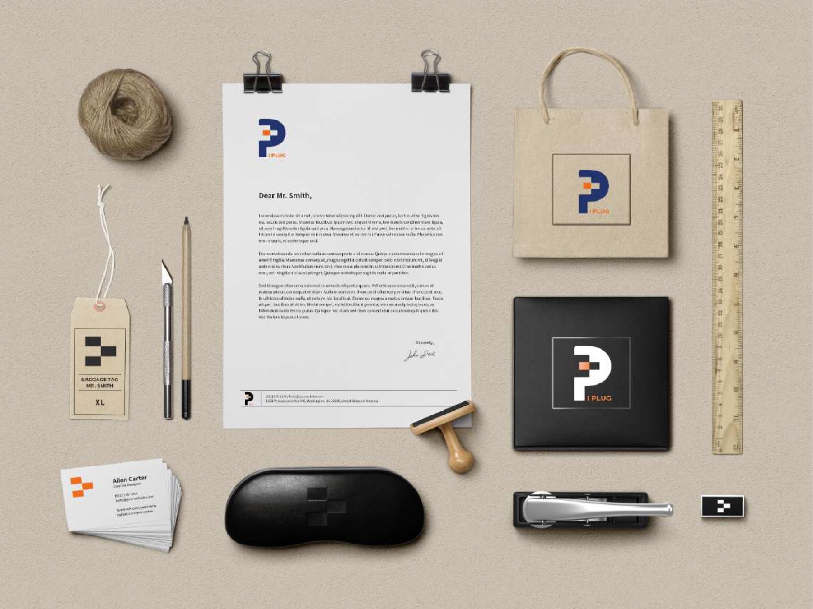

Brand identity
I Plug
Power simplified. A bold, precise identity for an electrical solutions company.

BRAND GUIDELINES
Explore the I Plug guidelines.
A visual reference for the mark, navy-and-orange palette, typography, and supporting brand elements.
View guidelines01 / PURPOSE & CONCEPT
Power, simplified.
A modern identity for I Plug, built around clean, simplified power. The grid-based logo merges the letter “I” with a plug symbol, while the tagline “Power Simplified” expresses clarity, accessibility, and trust.
02 / DESIGN APPROACH
The visual language.
Blue conveys reliability and precision; orange brings energy and innovation. A visible grid structure gives the mark balance, supported by clean, confident typography. The system extends across packaging, signage, business cards, digital interfaces, and a custom logo pattern.
03 / RESULT
A consistent brand presence.
A cohesive identity that reflects professionalism, innovation, and ease of use, with a consistent visual expression across physical and digital environments.
04 / WHY THIS DIRECTION
Make the idea immediately readable.
Combining a letterform with a plug gives an unfamiliar name a practical connection to electrical solutions. The compact, grid-based shape expresses order and precision without depending on a detailed illustration. Keeping the palette to navy and orange also creates a clear hierarchy: navy carries information, while orange draws attention.
05 / CRITICAL REASONING
Simplicity needs careful control.
A geometric mark can become generic if its proportions and spacing vary. Its distinctive negative space needs to remain clear at small sizes and in one-colour reproduction. Orange is most useful as an accent; using it for long passages or small text on white would weaken readability. The surrounding layouts therefore need enough space and contrast to let the mark work.
06 / ACROSS APPLICATIONS
One recognisable system.
Stationery, packaging, and digital interfaces have different constraints. Repeating the same mark, restrained colour balance, and clean type gives them a common identity without forcing every application into an identical composition.